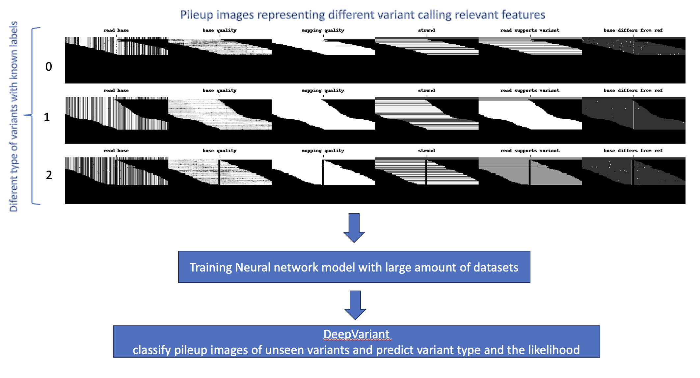
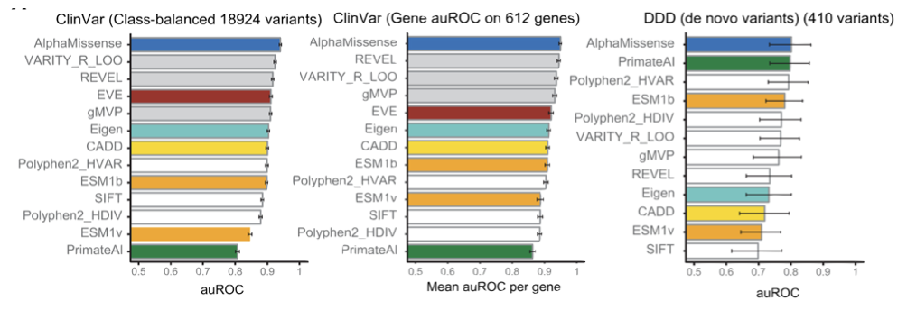

DeepVariant: Deep-learning tool
Time
Lecture: 20 minutes
Exercise: 10 mins
hands-on: 30 mins
Objectives
We will introduce two such tools used in variant calling and functional effect prediction
DeepVariant: Live session
AlphaMissense (Additional notes, not intended to cover in live session)
Variant calling
Variant calling is the process of identifying of variants from sequence data
Compare the sequence data from an individual to a reference genome to identify differences

Data preprocessing steps for variant calling
Will be discussed in detail on Day-5 sessions
Main input for variant calling
Alignment file used can be think of as a dataset representing sequence reads that are aligned to a reference genome - i.e., sequence reads are pileup along the reference genome

Standard variant calling tools
Standard variant calling tools are based on statistical models and various QC parameters
These tools first analyze alignment files to detect read-positions that differ from reference
Apply statistical methods combining various information (nucleotide and QC parameters) of these read-positions to identify genomic variants

#Run Haplotype Caller
$ gatk HaplotypeCaller \
--java-options -Xmx30g \
--input ${INPUT_BAM} \
--output ${OUT_VCF} \
--reference ${REFERENCE} \
--native-pair-hmm-threads ${CPU}
Deep learning based variant caller - DeepVariant
Various visualization techniques have been used to validate regions of alignment files with variants (e.g., Pileup-images)

DeepVariant leverages this concept of pileup-images to visualize not only the bases, but other features that are important for variant calling
DeepVariant generates sets of images for candidate variant positions representing range of features
Stack of pileup images each representing
Base calling quality
Mapping quality
Metadata on where position is reference or not
etc…
Availability of these images transform variant calling a image classification problem
DeepVariant use deep-learning model to classify these images and predict variants with high precision

DeepVariant vs traditional variant callers
DeepVariant showed higher Precision and sensitivity scores compared traditional callers (Ref: Original DeepVariant paper and Independent studies)
Precision vs Recall plot
High accuracy of DeepVariant compared to traditional callers:
DeepVariant won 2020 PrecisionFDA Truth Challenge V2 for all Benchmark Regions across Multiple sequencing Technologies
DeepVariant - best SNP Performance in 2016 PrecisionFDA Truth Challenge
DeepVariant makes a great difference especially for low coverage samples
Exercise
Why DeepVariants (deep-learning based) could outperform traditional variant callers?
DeepVariant model training and evaluation
This training dataset consist of 100s of millions of samples from multiple genomes, sequencers, and preparation methods
This help minimize the bias in the model towards a specific sequencing platform or technology
DeepVariant training data
Model is evaluated using unseen data from [precisionFDA Truth Challenge](https://precision.fda.gov/challenges/truth/results
Note
Hands-on: DeepVariant run
Log into VM following instructions given in previous session
Run inside the VM
# Move to home directory
cd $HOME
# Check your current working directory (you'll see e.g., /home/biont*)
pwd
# Run docker interactive mode
docker run \
-it \
--rm \
--gpus all \
-v /data:/data \
-v $PWD:$PWD \
-w $PWD \
nvcr.io/nvidia/clara/clara-parabricks:4.3.0-1 bash
Now you are inside the docker container
# Set path variable (i.e, copy following lines)
FASTA="/data/ngs/ref/Homo_sapiens_assembly38.fasta"
KNOWN_SITES="/data/ngs/ref/Homo_sapiens_assembly38.known_indels.vcf.gz"
BAM=/data/ngs/BAM/dw_sample.bam
# Run DV command & generate deepvariant.vcf output file (i.e, copy following lines)
pbrun deepvariant --ref ${FASTA} \
--in-bam ${BAM} \
--num-gpus 1 \
--logfile dv.log \
--out-variants deepvariant.vcf
## You can exit the docker with `exit` command
Inspect the DeepVariant output
deepvariant.vcf
AlphaMissense
AlphaMissense notes:
One of the main goals of variant calling is to evaluating the clinical significance of detected variants
Can we use ML to evaluate the clinical significance of variants?
Pathogenicity prediction (predicting damaging effects) of variants
Pathogenicity prediction is the process of determining the clinical significance of a variant
Pathogenic variants are those that cause a disease
Benign variants are those that do not cause or are not associated with a disease
Current methods developed to reach above goal rely on combining following two fields
knowledge of genetics and the biological processes - evolutionary conservation, protein structure, etc
statistical methods
For instance, variants that are
common in the population are less likely to have damaging effects (benign)
rare and run in families with disease are more likely to be pathogenic
highly conserved across species are more likely to be pathogenic
affecting (altering) the structure of proteins critical for cellular functions are more likely to be pathogenic
Main challenge
Over the years, scientists have identified a long list of disease associated genes
A large number of variants in these genes alters the protein sequence (amino acid sequence), but exact impact of on the protein structure is still unknown. Thus, association with the disease is also unknown
Such variants are known variants with uncertain significance
According to a recent study a large majority of such variants (that alter protein sequence - missense) are with uncertain significance - source
Differentiating pathogenic and bening such variants is a challenging task
Deep-learning based solution - AlphaMissense
Deep-learning model predicting the (missense) variant pathogenicity
Ref: https://www.science.org/doi/10.1126/science.adg7492
Source: <https://www.science.org/doi/10.1126/science.adg7492>__
Main steps:
Collecting and processing a large dataset of missense variants along with annotations indicating their pathogenicity (disease-causing or benign)
Convert variant info and amino acid sequences into representations suitable for deep learning models
Transform raw data into new features that can better represent the underlying patterns and relationships

Source: <https://www.science.org/doi/10.1126/science.adg7492>__Fine-tune AlphaFold deep-learning model that predicts protein structure to predict variant pathogenicity
Assess the accuracy and generalizability of variant pathogenicity prediction using independent datasets
AlphaMissense model training
Training data:
Bening: missense variants frequently observed in human and primate populations
Pathogenic: missense variants absent from human and primate populations
Validation data:
Tune model parameters
Held-out data
Pathogenic missense variants in various databases
Bening variants from population-databases
Test data:
Evaluate the model’s performance on unseen data
Held-out data
Pathogenic missense variants in ClinVar
Bening variants from population-databases
Model evaluation
Model evaluation ensures that the model’s performance is not biased by the training data and that it can generalize to new and unseen variants
Predict the pathogenicity of each variant in the independent dataset (variants not included in the training dataset)
AlphaMissense model is evaluated using multiple clinical benchmark datasets
ClinVartest set,De novo variantsfrom rare disease patients,

Source: <https://www.science.org/doi/10.1126/science.adg7492>__
Applications
AlphaMissense findings coupled with downstream functional experiments improve the current understanding of clinically actionable genes and variants
Improve the diagnostic yield of rare genetic diseases